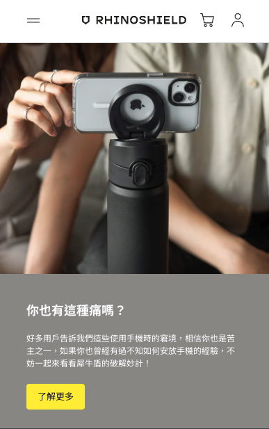
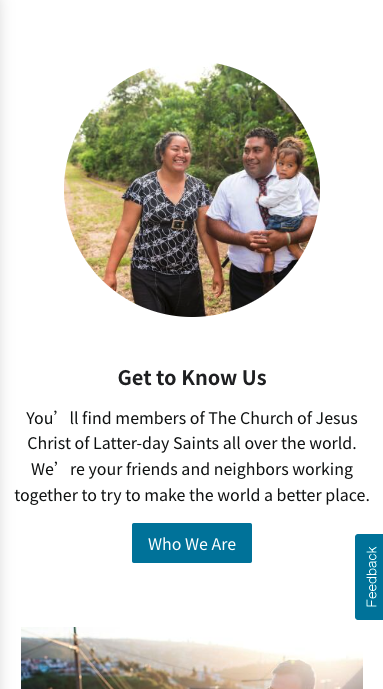
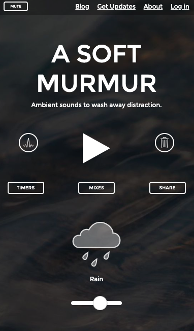

Proximity
RHINOSHIELD
rhinoshield.tw The picture and text are close, so the user would know perfectly that they are a section that are connected and tell the same story.
Fitt's Law
The Church of Jesus Christ of Latter-day Saints
churchofjesuschrist.org The button is big and easy to reach on the mobile screen.
White Space and Clean Design
A Soft MurMur
asoftmurmur.com The design does not fill all the space but leaves appropriate spaces to make the website clean.